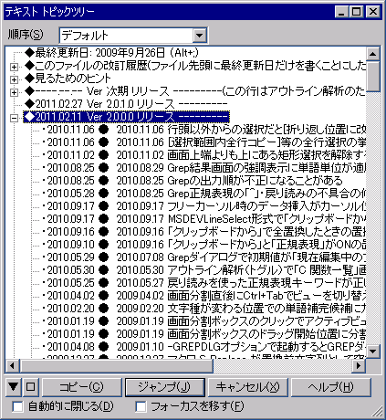
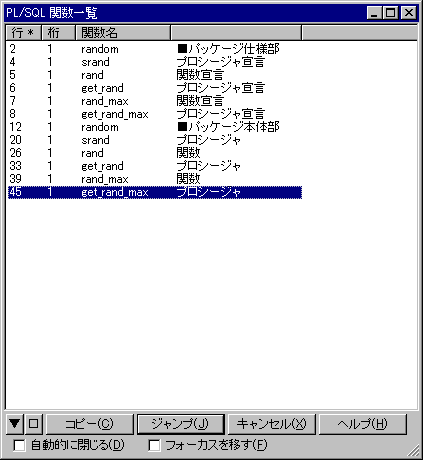

アウトライン解析
編集中のテキストから、特定の見出し記号や、関数の位置等を解析して一覧表示します。
タイプ別設定 『スクリーン』プロパティにより、解析方法を選択できます。
各アウトライン解析の説明は、上記のページを参照してください。
また、解析した結果の一覧から、選択した位置へ直接ジャンプすることができます。
・正しく解析されるとは限りません。決して厳密な構文解析をしているわけではありません。
・
[コピー] ボタンを押すと、解析情報をテキスト化しクリップボードにコピーします。
関数一覧等は
タグジャンプ可能なリスト、テキストトピックは文書の目次作成等に利用できるかもしれません。
・テキストトピックに使用する『見出し記号』は、カスタマイズ可能です（
共通設定 『書式』プロパティ）
■アウトライン解析ダイアログについて
アウトライン解析ダイアログのタイトルは、解析方法によって異なります。
ダイアログボックス上で、「アウトライン解析」のショートカットキー(デフォルトではF11)で、再解析を行えます。
また、「ブックマーク一覧」のショートカットキー(デフォルトではAlt+F2)を押すと、「ブックマーク一覧」に切り替わります。
「ファイルツリー」メニューを選ぶと「ファイルツリー」に切り替わります。(sakura:2.2.0.0以降)
・（解析結果の一覧）
解析結果が、アウトライン解析の種類によって、ツリーかリストで一覧表示されます。
項目をダブルクリックするか、選択してEnterキーを押すと、選択した項目に対応した位置にカーソルが移動します。
・順序
ツリーの場合に表示されます。
‐デフォルト
アウトライン解析の規定の順番で並べます。大抵は、行番号順です。
‐アルファベット順
ツリーの同一階層のなかで、項目名順に並べます。大文字小文字を区別します。
・自動的に閉じる
［ジャンプ］ボタンを押したり、項目をダブルクリックして、カーソルを移動したときに、アウトライン解析ダイアログを自動的に閉じます。
・フォーカスを移す
［ジャンプ］ボタンを押したり、項目をダブルクリックして、カーソルを移動したときに、編集ウィンドウにフォーカスを移します。
・［▼］ボタン
ウィンドウの位置メニュー（後述）を表示します。(sakura:2.0.0.0以降)
・［■］ボタン
押し下げられていると、アウトライン解析ダイアログのウインドウ位置とサイズを記憶します。(sakura:1.5.9.90以降)
・［コピー］ボタン
解析結果の一覧をクリップボードにコピーします。
クリップボードにコピーされる内容は、解析方法によって異なります。
関数一覧等はタグジャンプ可能なリスト、テキストトピックは文書の目次作成等に利用できるかもしれません。
・［ジャンプ］ボタン
解析結果の一覧で選択している行に、カーソルを移動します。



■アウトライン解析ダイアログのドッキング(sakura:2.0.0.0以降)
アウトライン解析ダイアログがエディタ本体と分離しているとき、ダイアログをエディタにドラッグ＆ドロップするとドッキングできます。
またドッキング状態のとき、アウトライン解析のタイトルをエディタ外部にドラッグ＆ドロップするとドッキングを解除できます。
ドッキングできる場所はエディタの上・下・左・右です。
上記の操作はウィンドウの位置メニュー（後述）からも変更できます。

[ウィンドウズマーク]
アウトライン解析の内容を最新化します。
[▼]
ウィンドウの位置メニューを表示します。
＜ウィンドウの位置メニュー＞
・現在のエディタのドッキング配置を以下から選びます。
[左／右／上／下ドッキング]
アウトライン解析ダイアログを左／右／上／下にドッキングします。
[フローティング]
アウトライン解析ダイアログをエディタ本体と分離して表示します。ドラッグ＆ドロップでドッキング可能です。
[ドッキング禁止]
アウトライン解析ダイアログをエディタ本体と分離して表示します。ドラッグ＆ドロップでのドッキングを禁止します。
・[ドッキング配置を同期]
チェックを入れると、ドッキング配置を変更したとき、他のウィンドウにも変更を反映します。
・新しくエディタを開いたときや、同期中のドッキング配置の決定方法を以下から選びます。
[ドッキング配置を共通継承]
全てのエディタが共通のドッキング配置に従います。
[ドッキング配置をタイプ別継承]
同一タイプのエディタが共通のドッキング配置に従います。
・[継承情報を統一]
現在のエディタのドッキング配置を、他のすべてのエディタとタイプ別設定に適用します。
同期中かどうかに関わらず、開いている全てのエディタに変更を反映します。
■マクロ構文
・構文: Outline( int1 :Integer );
int1 表示方法（省略可能、ただしPPAマクロは省略不可） (sakura:2.0.0.0で追加)
・記録: ×
・解説
表示方法には以下の値を指定できます。
0 アクティブ化。アウトライン解析を表示する。既に表示されていればフォーカスを移す（省略時規定値）
1 再解析。アウトライン解析を表示する。既に表示されていれば再解析して内容を更新する
2 トグル。アウトライン解析の表示／非表示を切り替える